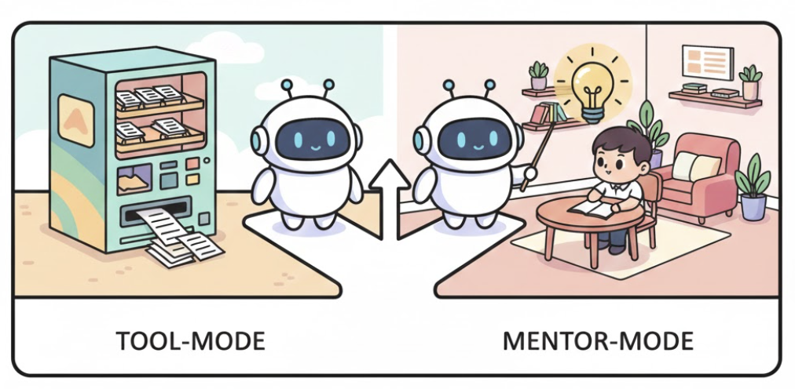
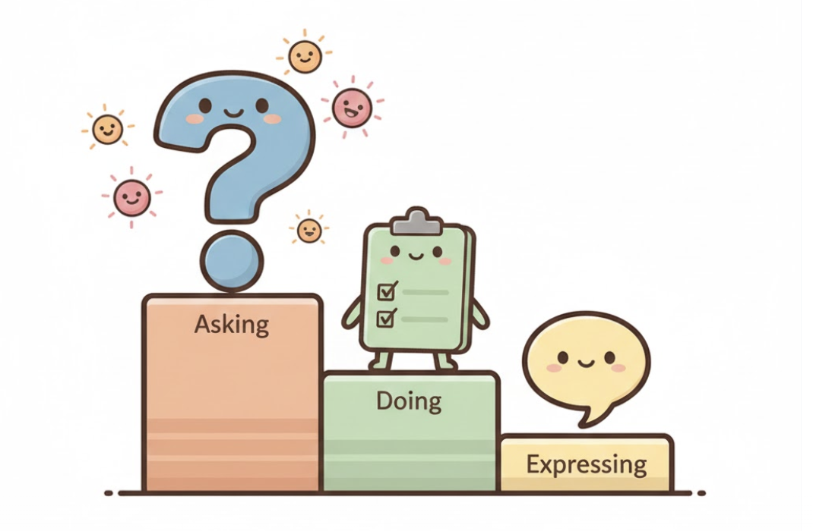

In the rush to integrate AI into daily workflows, many users default to treating it like a high-tech vending machine: input a request, get an output. This “Tool-mode” approach—prompts like “Write this email for me”—prioritizes speed and automation, echoing an industrial-era focus on efficiency over understanding.
But data from OpenAI’s report, How People Use ChatGPT, challenges this mindset. Analyzing over a million conversations, the study reveals that “Asking” interactions (seeking advice, clarification, or guidance) account for 49% of messages, outpacing “Doing” (task execution) at 40%, with “Expressing” (sharing views or feelings) at 11%. Notably, Asking is growing faster, and these conversations consistently earn higher satisfaction ratings from users—both via automated classifiers and direct feedback. This shift suggests AI’s true value lies not in replacing human effort, but in enhancing it through mentorship.
Tool-Mode vs. Mentor-Mode: Why the Distinction Matters
At its core, the difference boils down to intent and outcome. Consider these paired prompts: Tool-mode:”Write an email to my boss requesting a project extension.”
Mentor-mode: “How should I structure an email to my boss requesting a project extension? What key elements—like tone, evidence, and timing—should I consider to make it persuasive?”
From the report, about 10% of all messages involve tutoring or teaching, a subset of Practical Guidance (the top category at 29%). This indicates users are intuitively seeking AI as a coach for skill-building, not just output generation.

The Psychological Edge of Mentor-Mode
Why do users report greater satisfaction with advisory interactions? Drawing from learning science:
Boosted Agency and Ownership: Tool-mode entirely outsources cognitive labor. Mentor-mode, conversely, supports the user’s decision-making, shifting the user’s role from passive “operator” to active “author” who maintains control over the final outcome.
Reducing Cognitive Uncertainty: Many queries stem from ambiguity, not laziness. Mentor-mode provides mental models for navigating complexity, like decision trees or pros/cons lists, which reduce anxiety and build confidence.
Supporting Judgment in Real-World Skills: Expertise in areas like communication or problem-solving requires adaptive thinking under constraints. Mentor-mode trains this by explaining trade-offs, mirroring apprenticeship models where novices learn through guided practice.
Empirically, the report shows Asking messages have a higher “good-to-bad” quality ratio, likely because they create iterative, engaging dialogues that feel more collaborative.
EdTech’s Call to Action: Design for Coaching, Not Just Completion
For EdTech developers, this data demands a pivot from automation tools to adaptive mentors. The goal? Shift users from consumers of content to builders of competence.
Core Design Principle: Prioritize processes that generate thinking, not just artifacts.
Here are some practical applications, grounded in the report’s findings on education-related use (e.g., tutoring at 10% of messages) and higher-educated users’ preference for Asking:
Question-first UX: before drafting, the system asks 3 clarifying questions that a good teacher would ask.
Reasoning transparency: short “why this works” bullets.
Practice loops: “Want to try a version in your voice? I’ll help refine.” Metacognitive prompts: “What outcome matters most: speed, relationship, credibility, or accuracy?”